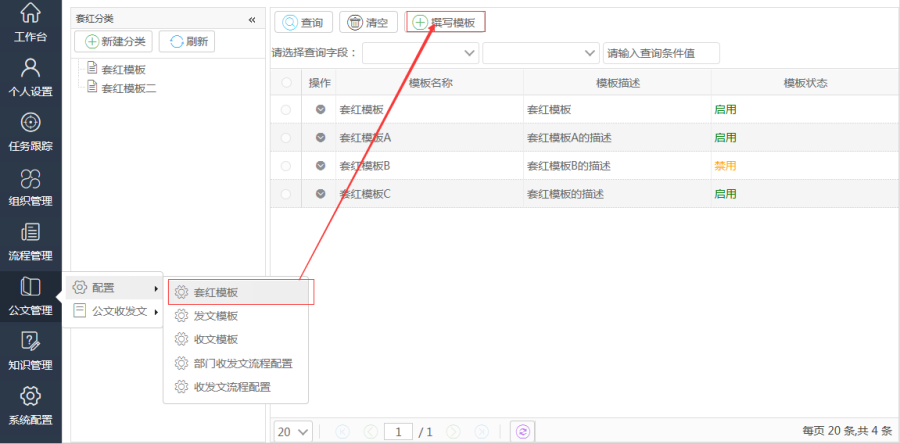
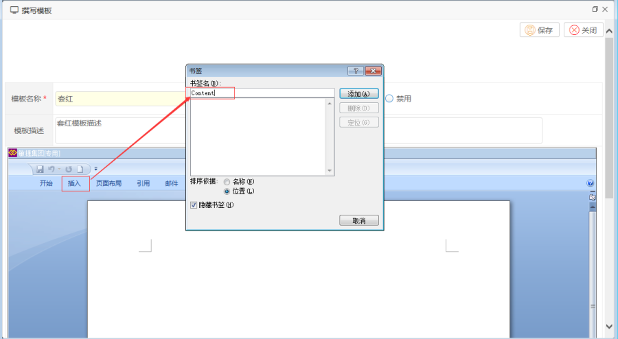
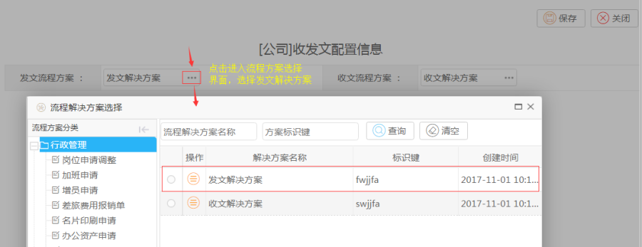
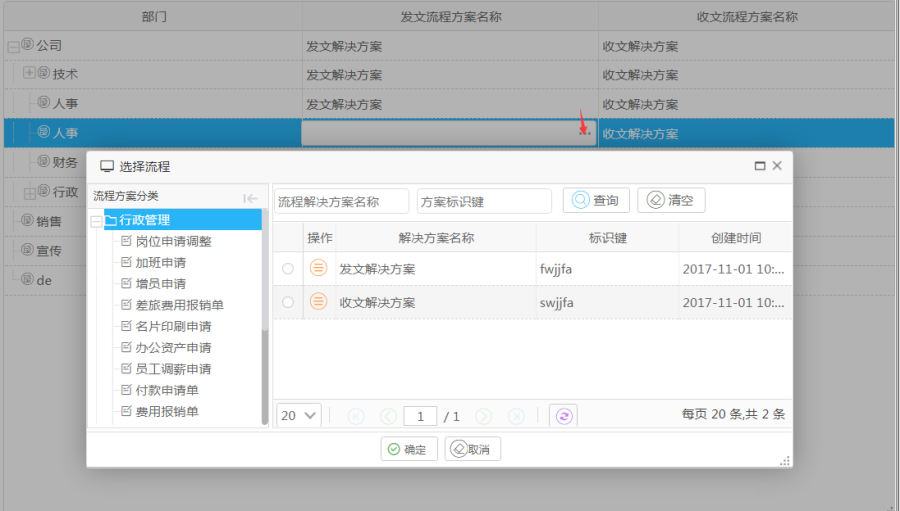
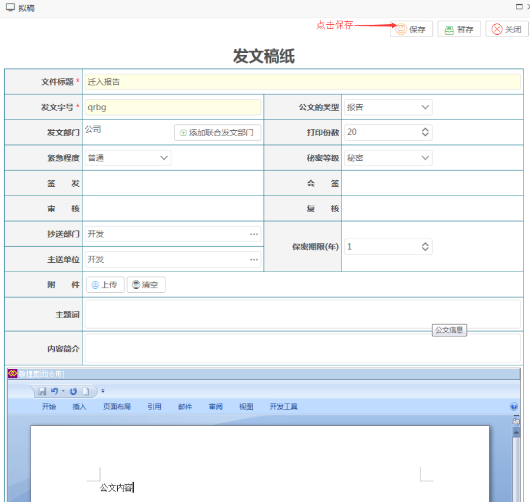
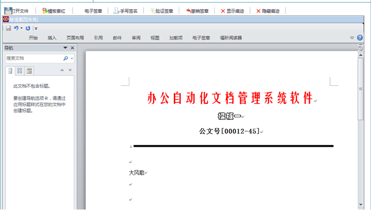
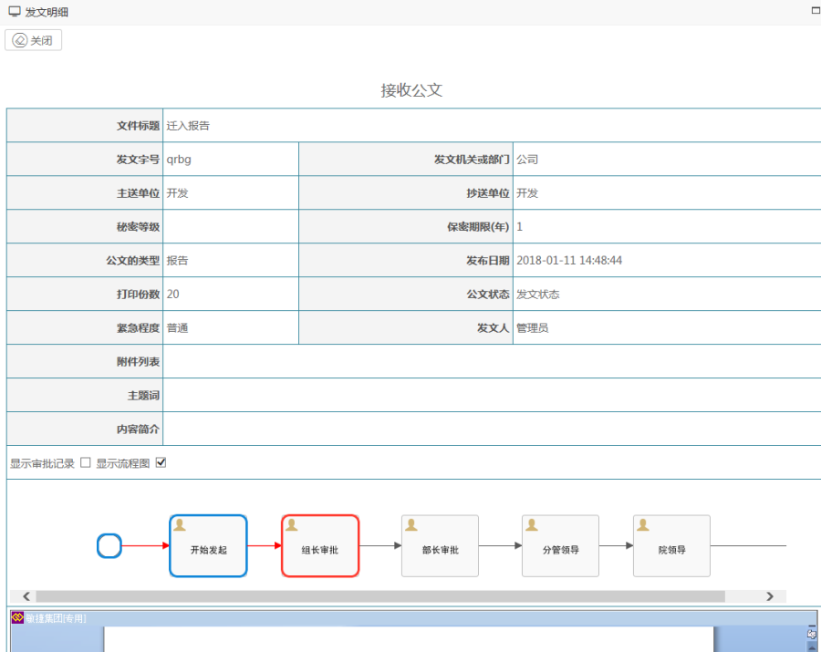
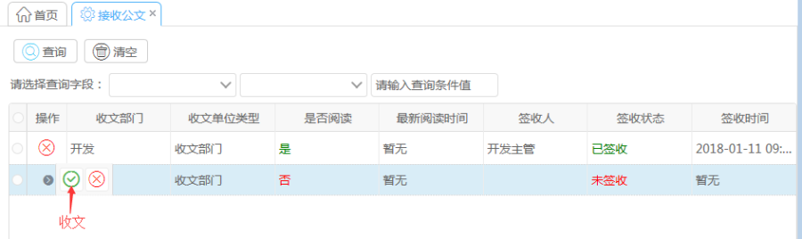
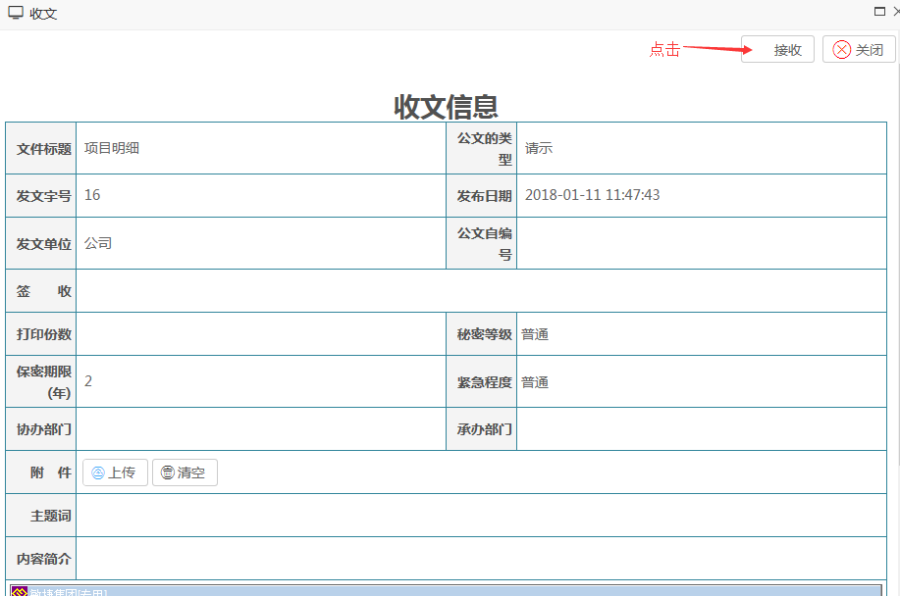
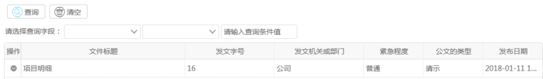

公文实现操作方法
需要先把收发文表单和收发文流程方案配置好。
点击公文子系统,点击[配置]—[套红模板]/[发文模板]/[收文模板]进入撰写模板页面,选中分类中的一项,再点击[撰写模板]即可新增模板,注意,使用金格OFFICE控件需要使用IE浏览器。

创建模板的时候,需要手动加入Content书签,如图所示：

点击[配置]中的[部门收发文流程配置]进入配置页面,分别点击发文流程方案和收文流程方案,选中设定的流程解决方案进行配置,之后,点击保存.
操作如下图所示：

也可以在[配置]中的[收发文流程配置]按照部门进行设置收发文流程。

设置好部门的流程后,部门的收发文流程就默认以此方案收发文
[公文收发文]---[发文管理]---[发文拟稿]
填入相关资料后点击保存即会启动当前部门设定的发文流程进行发文,如下图所示.届时会启动该流程,流程的节点对应的任务也会出现。

在流程模块的代办任务里会按照流程设置产生一条任务,如下图：

可以设定在某个节点里进行文件模板套红/电子签章/保留痕迹等功能
发文之后在[发文管理]界面点击[明细]按钮可以查看发文明细,包括可以查看流程进行情况,审批情况等信息,如下图所示：

待发文的流程任务全部执行完毕之后,会在[接收公文]里产生一条未签收状态的记录点击[收文]按钮打开收文明细之。

点击上方的[接收]按钮进行接收公文。

此时会按照所在部门设定的收文流程启动一条收文流程,跟发文同理,收文流程结束之后在[收文管理]页面能看到词条公文被接收.如下图所示：
